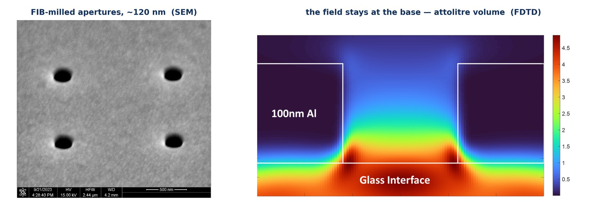
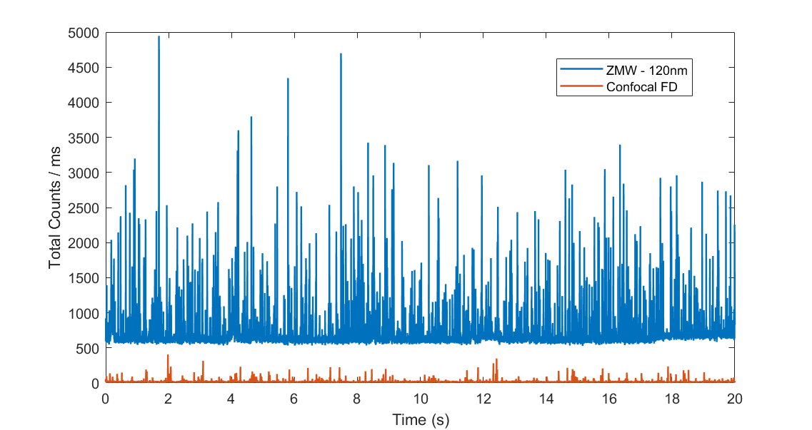
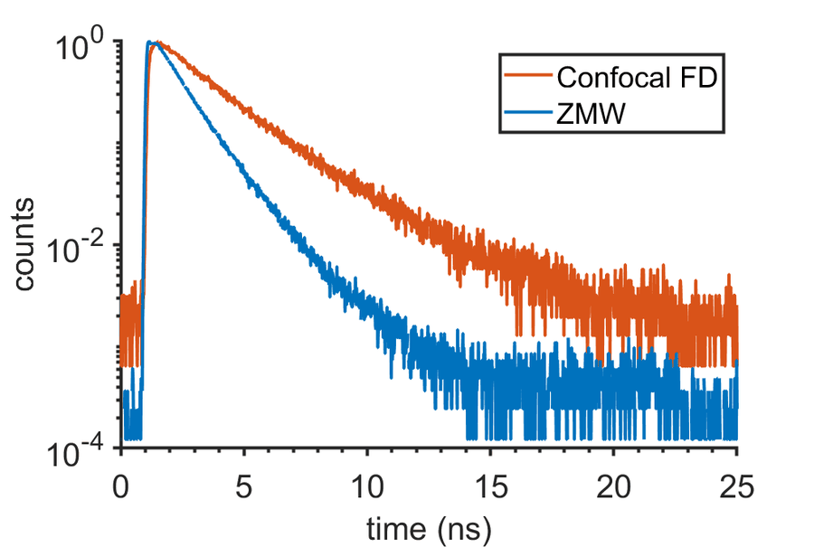
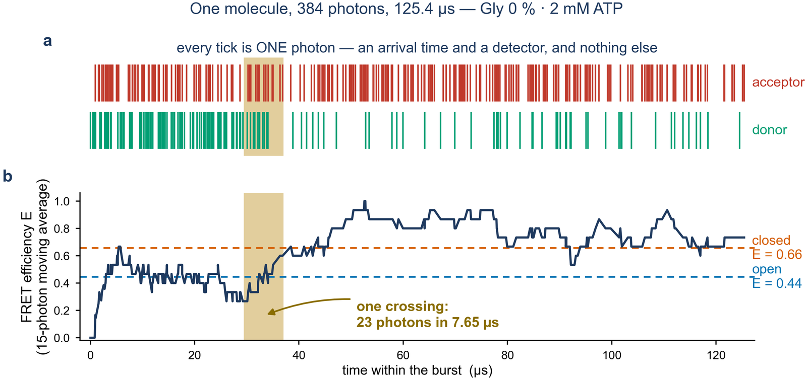
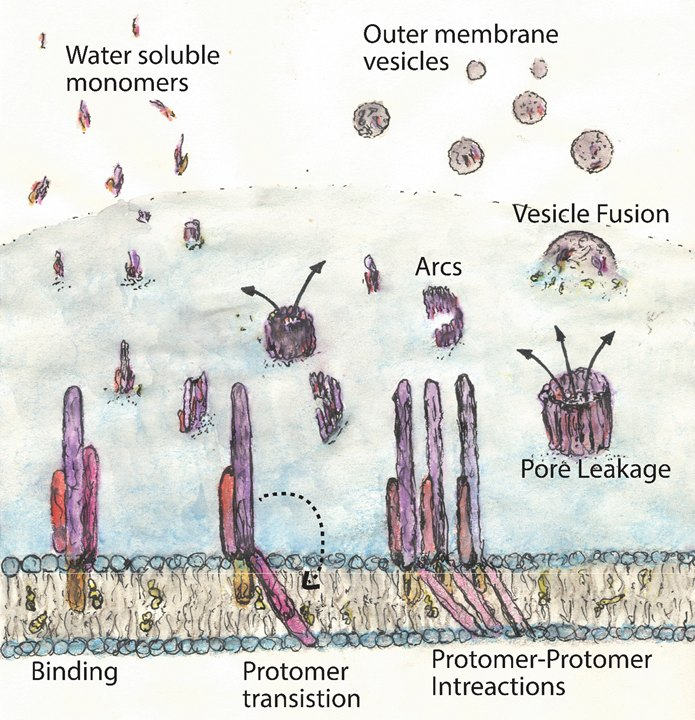
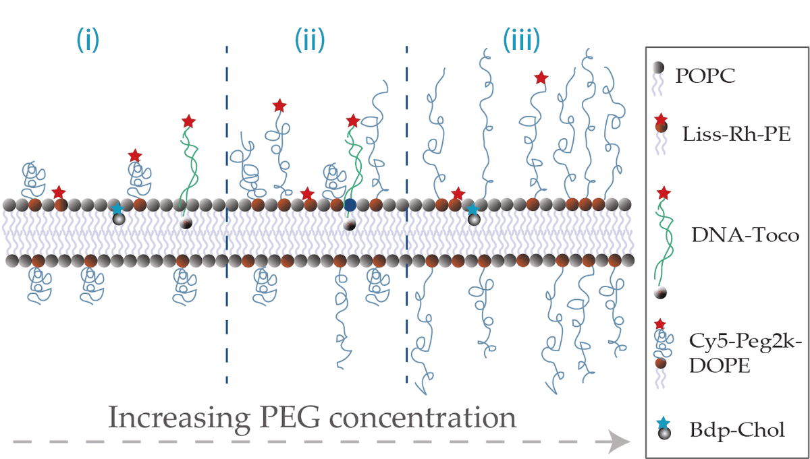

Watching single molecules fold, move, and assemble
My work sits at the intersection of single-molecule biophysics, nanophotonics, and statistical mechanics — building optical instrumentation to resolve how individual biomolecules overcome free-energy barriers and function in crowded environments.
A bulk experiment averages over billions of molecules at once. The average is smooth and reproducible, and it hides the things I most want to see: the short-lived intermediate, the rare crossing, the molecule that does not behave like its neighbours. A rate constant says how often something happens. It never says what happens while it is happening.
So I watch one molecule at a time, and try to watch it fast enough to catch the event itself. That takes three things working as one instrument. Single-molecule FRET reports the distance. Nanophotonic structures, zero-mode waveguides and plasmonic antennas, make each molecule bright enough to follow through a microsecond. Inference photon by photon extracts the trajectory from arrival times instead of from binned averages. Without the photons there is nothing for the statistics to work on, and without the statistics the photons are only noise.
How fast a molecule can be watched is set by how fast its photons arrive, and that is not only a matter of instrumentation. It decides whether a measurement and a simulation are describing the same event or merely the same molecule.
Until recently the two did not meet. All-atom molecular dynamics could produce microseconds of trajectory, while an ordinary single-molecule measurement could not resolve much below half a millisecond, so a simulated transition path could be compared against a measured rate but never against a measured path. Raising the photon rate closes that gap from the experimental side. The events that matter, the microsecond crossings, now fall inside both windows at once, and the same quantity can be computed and observed rather than inferred.
1. Transition Paths of Protein Conformational Change

Proteins work by switching between conformations, and each spends almost all of its time settled in one meta-stable free-energy well or another. The crossing itself, the transition path, lasts only microseconds (τtp ~ 1–10 µs), yet it is where the mechanism of the change is decided. An enzyme opening and closing over its substrates is our current test case; the same measurement applies to any protein whose function rides on a conformational switch.
In the Gilad Haran Lab at the Weizmann Institute of Science, we develop plasmonic-enhanced smFRET methodologies that boost photon emission rates to directly track individual protein molecules as they traverse the barrier.
- Quantifying Transition Path Durations: Measuring barrier crossing transit times directly from photon arrival timestamps rather than inferring them from transition rates.
- Internal Friction & Viscosity Effects: Probing how solvent dynamics and intra-chain roughness modulate the velocity of conformational reconfiguration.
- Energy Landscape Topography: Mapping multidimensional reaction coordinates beyond simplified one-dimensional projections.
2. Zero-Mode Waveguides & Plasmonic Nanophotonics
A historical bottleneck in single-molecule fluorescence microscopy has been the diffraction limit: standard confocal illumination requires sub-nanomolar fluorophore concentrations (below 1 nM) to isolate individual diffraction-limited spots. However, physiological macromolecular interactions, weak protein complexes, and enzymatic reactions operate in the micromolar regime (1–100 µM).
We utilize Zero-Mode Waveguides (ZMWs) — sub-wavelength circular nano-apertures milled into a thin aluminium film on glass or quartz coverslips:
- Volume Confinement: Light propagating into apertures narrower than the optical cutoff wavelength decays exponentially as an evanescent wave, confining the effective observation volume to zeptoliters (Vobs ~ 10−21 L).
- Single molecules at high concentration: Keeps the number of molecules inside the observation volume near one even when the solution holds far more than a confocal volume could tolerate, so freely diffusing, dye-labelled enzymes can be watched one at a time.
- Plasmonic Field Enhancement: Localized surface plasmon resonances boost excitation rates and enhance radiative decay, accelerating fluorescence emission for ultra-fast photon statistics.



A second route to more photons: plasmonic nanorods in a confocal volume
The nanorod experiments keep the ordinary confocal geometry but attach the dye-labelled enzyme to a gold nanorod through a PEG brush and a biotin–streptavidin bridge, which holds the dyes a defined distance from the metal. As the conjugate diffuses through the focus, the rod’s plasmon resonance raises the excitation and emission rates of dyes near its tips, so each passage yields a far brighter burst than a free enzyme gives in the same volume.
3. Photon-by-Photon Inference & Single-Molecule Image Analysis

Single-molecule data are photon-limited, and the figure above is the reason the analysis has to be built around that. A microsecond crossing is a few tens of photons. Binning arrival times into millisecond histograms averages exactly the event away, so every method I use works from the photon record itself.
H2MM: hidden Markov analysis photon by photon
H2MM, developed in the Gilad Haran Lab, fits a hidden Markov model directly to the arrival time and colour of each photon in a single-molecule FRET measurement. It returns the number of conformational states, their FRET efficiencies and the rates between them, and the most likely state path through the data. I use it, with extensions for transition-path times and batch processing, on freely diffusing enzymes in zero-mode waveguides and on nanorod conjugates.
Single-molecule image analysis from the Ph.D.
Movies of dye-labelled proteins on supported lipid bilayers, recorded by TIRF microscopy, were turned into numbers with pipelines I built and published as a protocol:
- Single-particle tracking: localisation and linking with u-track or TrackMate, then mean-squared and instantaneous squared displacement analysis to classify diffusion and separate mixed populations.
- Binding kinetics: rate constants from the appearance of particles on the membrane over time.
- Oligomer stoichiometry: single-molecule photobleaching step counting, with a binomial correction for incomplete labelling, which gave the ClyA oligomer distributions in the PNAS and JoVE papers.
- Housekeeping: drift correction, trace extraction and particle counting for image stacks.
4. Membrane Biophysics & Pore-Forming Toxins (ClyA)

During my doctoral research at the Indian Institute of Science (IISc) with Prof. Rahul Roy, in a long collaboration with Prof. K. G. Ayappa's group, I investigated how bacterial pore-forming toxins breach mammalian and bacterial cell membranes.
Using single-molecule tracking and total internal reflection fluorescence (TIRF) microscopy on model supported lipid bilayers (SLBs):
- Intermediate Oligomer Trapping: Discovered that cholesterol acts as a kinetic cofactor that stabilizes intermediate oligomeric assemblies of Cytolysin A (ClyA), lowering the barrier to assembly of the dodecameric pore.
- Conformational Plasticity: Demonstrated that intrinsic flexibility within the ClyA monomer governs its lytic competence and membrane-binding kinetics.
- Macromolecular Crowding: Characterized the diffusion and self-assembly of proteins on membranes crowded with grafted polymer brushes, mimicking physiological glycocalyx barriers.
Crowded membranes: grafted polymers as a tunable obstacle
Cell membranes are crowded by a dense layer of glycans and grafted macromolecules. We rebuild that crowding on supported lipid bilayers with grafted PEG, tune the layer from sparse mushrooms to a dense brush, and follow single molecules in it with TIRF microscopy. How strongly a molecule feels the layer depends on how far it protrudes above the bilayer rather than on what it is made of. Once the brush is fully developed, diffusion of protruding molecules turns sub-diffusive and the layer gates the access and assembly of membrane-lytic proteins. Lifting the bilayer off the glass on a polymer cushion separates the brush’s own effect from an extra slowdown that belongs to the substrate (manuscript in preparation).

Future Directions
Chemical engineering at the scale of one molecule: a protein treated as the smallest chemical process there is, with its own reaction kinetics, transport and energy balance, and the photonic devices that make those quantities measurable, first at the frontier and then cheaply enough to spread.
I think of the laboratory as one process rather than four projects. Devices are made, photons are measured, trajectories are inferred, and the product goes to three places: the kinetics and the transport that are the science, and an affordable instrument that is the reach. A recycle stream closes the loop, because what the science asks for, and what a cheap instrument can afford, decide what gets built next.
Reaction engineering of a single molecule
What happens during the crossing itself?
A conformational change is a unimolecular reaction, and a transition-path time is its residence-time distribution in the barrier region. With photon rates high enough to resolve microseconds, the crossing can be measured rather than inferred from the rate, and the activation, transport and efficiency questions of reaction engineering can be asked of one molecule.
- The base is in hand. A photon-by-photon estimator of the transition-path time, validated against simulated ground truth, has been applied to adenylate kinase in zero-mode waveguides across a series of solvent viscosities. The manuscript is in preparation.
- The measurement now resolves the same microseconds that an all-atom simulation can produce, as the timescale figure above shows. The next step is the direct comparison that this permits: measured and simulated distributions of transition-path times for the same crossing, which turns the time from a number into a test of the barrier's shape and of the friction along the reaction coordinate.
- Then a fuelled machine. Timing the crossing with and without its fuel asks whether the fuel drives the crossing or only resets the machine for the next one. That is the energy balance of one molecule, and the efficiency question of reaction engineering put where it can be measured.
Transport and friction in crowded, complex media
When does bulk viscosity stop being the right number?
Inside a cell a protein moves through a crowded, structured, non-Newtonian fluid, and bulk rheology says little about the friction a nanometre-scale domain feels as it swings shut. Timing the crossing across solvents, crowders and condensed phases is a way to find the length scale at which continuum transport breaks down.
- The viscosity series already gives a friction term for the crossing. The first step repeats it in crowders of different architecture, flexible and branched polymers and small proteins at cellular volume fractions, to find the scale at which the bulk viscosity stops predicting the friction a swinging domain feels.
- The second step is interpretation, and the theory has just moved. Makarov and Sollich have shown that a rough energy landscape, whether frozen or fluctuating in time, can give the same apparent diffusivity, and have re-derived the bounds on roughness that an experiment can infer (PNAS 2026). The temperature and viscosity dependence of the transition-path time is the measurement that can separate the two, since roughness enters as a squared ratio of energy to temperature while solvent friction enters linearly through the viscosity.
- Where it leads is a transport coefficient for the crowded interior of a cell, measured on one molecule and usable in models of intracellular kinetics. The crowded-membrane measurements of my doctorate, in which a grafted polymer layer set the friction on a surface, are the two-dimensional version of the same question.
Nanophotonic devices, engineered to be made
Can the device leave the cleanroom?
Zero-mode waveguides and plasmonic antennas are my measurement platform, and an engineering problem in their own right: electromagnetic design, nanofabrication, surface passivation, colloidal synthesis and bioconjugation, and the mass transfer of molecules into a zeptolitre volume.
- Today each aperture is milled one at a time by a focused ion beam, about half a second apiece, so that an array of two hundred by two hundred is five and a half hours of beam time, and every chip carries the cost of the instrument that made it. The apertures shown on this page were made that way.
- Khelidj and co-workers have demonstrated a replication route: sol-gel nanoimprint from a reusable master, followed by vapour-phase etching, giving waveguide arrays with up to eight-fold brightness enhancement and sub-millisecond resolution without a lithography step for every batch (Small 2026). Adapting that route, with the colloidal nanorod conjugate as its bottom-up counterpart, is the first engineering project of the laboratory: a process with a yield and a cost per chip, rather than a fabrication.
- From there, design rules for the photon budget written as a specification, covering aperture diameter, film thickness, undercut, passivation and the transport of molecules into the aperture. The same toolkit reaches beyond biology, to quantum emitters coupled through plasmonic cavities, a collaborative direction I have begun to explore.
Frugal single-molecule science and diagnostics
Can every college laboratory do single-molecule FRET?
A plasmonic structure that makes a molecule many times brighter changes which detector is needed. Fast kinetics that today demand single-photon counters and a research microscope could be read with an inexpensive camera, and the inference software beside it can be open.
- Byagathvalli, Challita and Bhamla define frugal science not as cheaper components but as a different design approach to the same physics, and make the case for it as chemical engineering (Ind. Eng. Chem. Res. 2021). The design approach here is to move the expense out of the detector and into the nanostructure. A molecule made many times brighter by a plasmonic structure can be followed by an ordinary CMOS camera at kilohertz frame rates, where today it needs a photon-counting detector and a research microscope.
- The first instrument is therefore a camera-based plasmonic microscope built around a laser diode and a replicated chip from the device direction. It is inexpensive by design, which makes it the instrument a new laboratory can start with, and the photon-counting instrument can follow.
- Where it leads: the same instrument in an undergraduate teaching laboratory, and, with a clinical partner, a diagnostic that reads what a molecule is doing rather than only whether it is present, from a small sample.
Together these make one laboratory: kinetics and transport as the science, devices as the engineering, and affordable measurement as the way it reaches students and clinics.